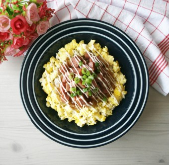

자취생을 위한 음식 레시피
홈
레시피
뒤로가기
스팸마요덮밥

재료
(1인분 기준 / *로 표기되어 있는 것은 필수 재료)
스팸 0.5개 *
밥 1공기 *
마요네즈 *
계란 2개 *
양파 1/3개 *
양조간장 1.5T *
맛술 1T *
물엿 1T *
물 2T *
쪽파 조금
1. 스팸을 적당한 크기로 썰고 익힌다.
2. 계란 2개를 스크램블한다.
3. 채썬 양파를 양조간장, 맛술, 물엿, 물과 함께 팬에 넣고 조려준다.
4. 그릇에 세팅 후 마요네즈를 취향에 맞춰 뿌려준다.
5. 맛있게 먹는다.